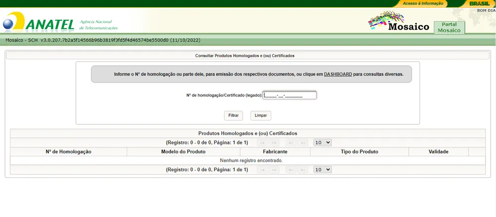
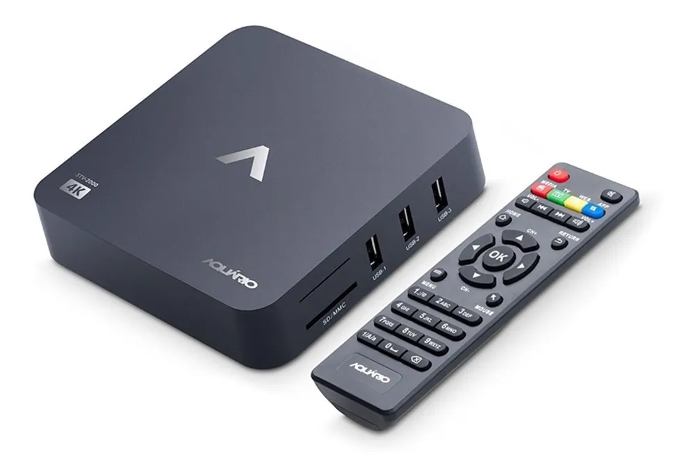

Para que as caixinhas de TV sejam comercializadas legalmente no Brasil, a empresa fabricante também precisa atender aos padrões mínimos de qualidade e segurança. Segundo a Anatel, "os requisitos vigentes destinados à avaliação da conformidade certificam suas interfaces de comunicação sem fio, além de atestarem sua segurança elétrica e compatibilidade eletromagnética."
Além de analisar a qualidade do produto comercializado, a Anatel avalia se a TV Box cumpre os requisitos de segurança cibernética. Isso evita que os consumidores corram o risco de terem informações pessoais vazadas na internet, como conta bancária, acesso de redes sociais, entre outros. De acordo com o presidente da Anatel, Carlos Baigorri, dispositivos clandestinos podem conter malware capaz de acessar dados do usuário, por meio da rede Wi-Fi.
Como saber se uma TV Box é homologada pela Anatel?
Para saber se sua TV Box é homologada, acesse a plataforma Mosaico. O sistema foi desenvolvido pela própria Anatel a fim de identificar a certificação de diversos eletrônicos que circulam no Brasil. Basta pegar a sua caixinha e anotar qual a numeração destacada na parte de trás do aparelho.
Com o número em mãos, preencha o campo de "n° de homologação/certificado" e clique em "filtrar". A plataforma retorna todos os dados sobre a sua TV Box, como modelo do produto, fabricante e validade. Caso ela não seja certificada, as informações retornarão vazias ou com algum campo destacado. Outra possibilidade é verificar se o dispositivo possui o selo da Anatel em sua superfície.
